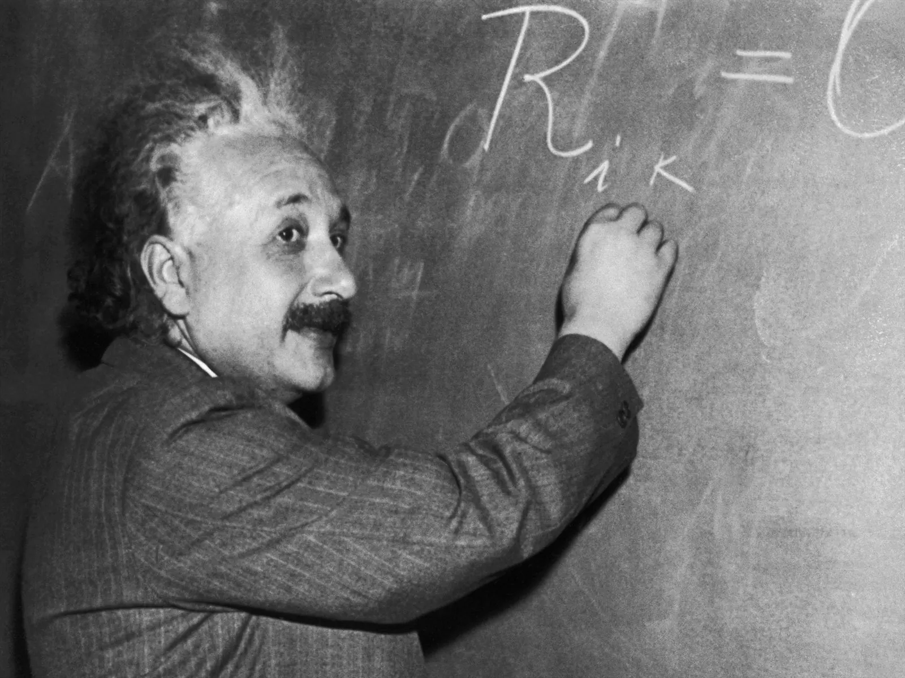
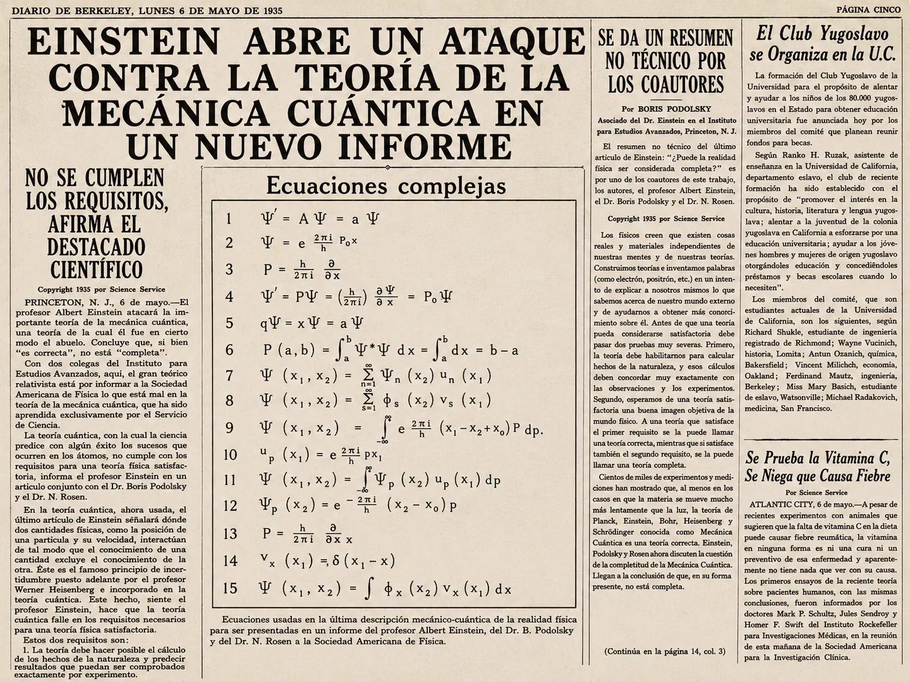

Fuente histórica: Berkeley Daily Gazette, 6 de mayo de 1935.
En mayo de 1935, el diario estadounidense Berkeley Daily Gazette publicó una noticia con un título llamativo: "Einstein Opens Attack on Quantum Mechanics Theory in New Report" ("Einstein abre un ataque contra la teoría de la mecánica cuántica en un nuevo informe"). La nota informaba sobre un artículo científico —conocido hoy como el artículo EPR, por las iniciales de sus autores: Einstein, Podolsky y Rosen— que había sido enviado a la revista Physical Review y que pondría en jaque uno de los pilares de la física del siglo XX.
El artículo EPR, titulado "¿Puede considerarse completa la descripción mecánico-cuántica de la realidad física?", no era una crítica superficial. Era una objeción profunda, cuidadosamente argumentada, que partía de una pregunta que todavía hoy los físicos discuten: ¿la mecánica cuántica describe todo lo que existe en el mundo microscópico, o hay algo que se nos escapa?
Para entender la objeción de Einstein, hay que entender qué dice la mecánica cuántica. Según esta teoría, una partícula —un electrón, por ejemplo— no tiene una posición y una velocidad definidas hasta que alguien la mide. Antes de la medición, la partícula está en una superposición de estados: una mezcla de todas las posiciones y velocidades posibles, cada una con una cierta probabilidad. La herramienta matemática que describe esta situación es la función de onda, representada con la letra griega ψ (psi).

La función de onda permite calcular, con enorme precisión, dónde es más probable encontrar una partícula cuando se realice una medición. Y funciona. Las predicciones de la mecánica cuántica coinciden con los experimentos con una exactitud asombrosa: algunas de sus predicciones han sido verificadas con precisiones de una parte en mil millones. Ninguna otra teoría física tiene ese nivel de corroboración experimental.
Pero Einstein no estaba conforme. Para él, una teoría física completa debía cumplir dos condiciones: primero, sus predicciones debían coincidir con los experimentos (eso lo cumplía); segundo, a cada elemento de la realidad física debía corresponderle un elemento en la teoría. Y ahí estaba el problema.
El argumento EPR proponía un experimento mental (un Gedankenexperiment) con dos partículas que habían interactuado y luego se separaban. Según la mecánica cuántica, medir una propiedad de una partícula —por ejemplo, su posición— determinaba instantáneamente la propiedad correspondiente de la otra partícula, sin importar qué tan lejos estuvieran. Einstein llamó a esto "espeluznante acción a distancia" (spukhafte Fernwirkung). Si la información no puede viajar más rápido que la luz, ¿cómo "sabe" la segunda partícula que la primera fue medida?
La conclusión de EPR era que la mecánica cuántica, aunque correcta en sus predicciones, debía ser incompleta. Debían existir lo que Einstein llamaba "variables ocultas": propiedades de las partículas que la teoría no describía pero que determinaban los resultados de las mediciones. Si esas variables existieran, no habría necesidad de probabilidades ni de "acción a distancia": todo estaría predeterminado desde el comienzo.
La respuesta no tardó en llegar. Niels Bohr, el gran físico danés y principal arquitecto de la interpretación estándar de la mecánica cuántica (la llamada interpretación de Copenhague), respondió unas semanas después. Su argumento —complejo y todavía debatido— era que Einstein estaba pidiéndole a la física algo que la física no puede dar: una descripción de la realidad independiente del observador. Para Bohr, las propiedades de una partícula no existen antes de ser medidas. La medición no revela una propiedad preexistente: la crea.
Durante décadas, el debate EPR fue considerado puramente filosófico. ¿Cómo se podía resolver experimentalmente si existían variables ocultas o no? La respuesta llegó en 1964, cuando el físico norirlandés John Bell demostró que era posible diseñar un experimento para distinguir entre la mecánica cuántica y cualquier teoría de variables ocultas. Los experimentos realizados a partir de los años 70 —por Alain Aspect y otros— le dieron la razón a la mecánica cuántica: las variables ocultas locales no existen. La "espeluznante acción a distancia" de Einstein es real. Hoy la llamamos entrelazamiento cuántico, y es la base de tecnologías como la computación cuántica y la criptografía cuántica.
Pero si bien Einstein "perdió" el debate en el sentido técnico, su pregunta sigue viva. ¿Qué significa realmente la función de onda? ¿Describe la realidad o solo nuestro conocimiento de ella? ¿Existe el mundo cuando nadie lo mira? Estas preguntas no tienen respuesta definitiva, y son las mismas que los físicos y filósofos se hacen hoy, casi un siglo después.
¿Y qué tiene que ver todo esto con la energía nuclear? Mucho, y de manera directa. La física nuclear —el estudio del núcleo atómico, de la radiactividad, de la fisión y la fusión— depende completamente de la mecánica cuántica. Sin la función de onda, sin el principio de incertidumbre, sin el efecto túnel (otro fenómeno cuántico), no podríamos explicar por qué un núcleo de uranio se rompe, por qué los neutrones lentos son más efectivos que los rápidos, ni cómo funcionan los reactores. Cada central nuclear del mundo es, en cierto sentido, una máquina cuántica.
La mecánica cuántica permitió comprender el mundo microscópico, pero también abrió una de las preguntas más profundas de la física: ¿qué significa describir la realidad? Einstein no rechazaba la teoría: buscaba algo más profundo. Y aunque el experimento le dio la razón a Bohr, la pregunta de Einstein —¿es la mecánica cuántica una descripción completa del mundo?— todavía no tiene respuesta.